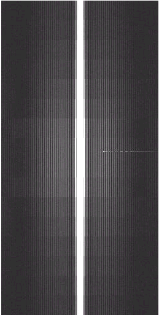

Click on image to view successful solution for each particular problem.
|
Pre-Amp Oscillation (artifact on all images in 1st series) |
First Image After Install |
Corduroy in 8 Channel Brain Coil |
|
 |
||
|
Bad AP Causes Random Spikes in SPT |